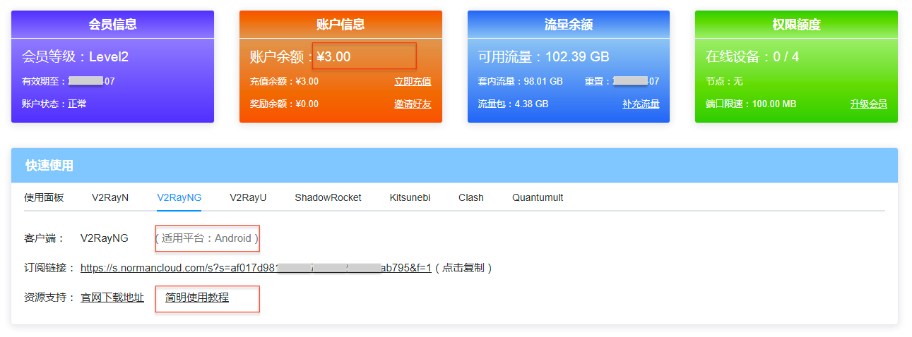

我们在日常的工作和学习过程中，总会需要用到一些被大陆屏蔽掉的网站或者APP，例如：Instagram、Youtube（国内昵称油管）、脸书FaceBook、推特Twitter、谷歌Google、Pixiv（一家ACG图站）等等。虽然我们访问这些站点或者APP仅仅出于正常的工作、娱乐需求，但是以国内目前的管理政策（主要是政治方面的考虑），都是无法直接访问的。
想要正常的访问这些网站或者APP，就需要通过技术手段使你的网络可以突破国内的网络审查，也就是大家耳耳熟能详的：“科学上网”、“翻墙”、“梯子”，“加速器”，“VPN代理” 等等（最专业的说法应该叫做“网络代理”）。
通过科学上网，你可以正常访问所有的外国网站和APP（某些网站注册需要国外手机号，这是另一个话题了），同时还可以隐藏自己的真实IP地址，从而避免自己的隐私被泄漏。事实上，使用VPN服务最多的国家其实并不是中国，反而是美国英国等西方国家，而他们使用VPN服务的理由很简单：保护隐私。
本文今天就给大家简单介绍下科学上网的原理，以及具体的方法。（如果只是想找可靠的加速器，可直接跳到文章末）
1. 科学上网的原理
国内的网络环境： 要了解科学上网的原理，首先必须介绍国内特殊的网络环境。简单来说：国内出于许多政治方面的原因而封锁了大量海外最流行的社交媒体和搜索引擎，同时还有一部分企业因为厌恶国内严格的网络审查机制而不愿意进入中国市场。所造成的结果就是：目前大量全球范围内都很火热、流行的互联网服务，国人无法都使用。而只能访问国内经过严格审查过滤后的“健康的”网站和APP。
常用的封锁方法：国内用来截断对境外网络访问的一整套技术被称为“伟大的防火长城”，也就是大家耳熟能详的“GFW”、“墙”。这套技术系统常用的技术手段包括：DNS污染、域名劫持、IP封锁等等。如果希望正常访问墙外的各种互联网服务，那就必须借助网络代理的帮助。
网络代理的原理：任何网络代理的原理都是相同的。如果你（即客户端）想要访问某个境外网站，比如说Instagram的服务器，你直接访问是无法通过GFW的拦截的。那么如果有另一台处于境外的代理服务器（下图中间的部分），是中国大陆可以访问到的。那么，你就可以先将Instagram的访问请求发送到这个代理上，然后由它再去向Ins的网站进行请求。当Ins的网站返回数据的时候，代理也会将数据转发到你的设备上。这样，你就可以正常的访问Instagram、Google、Youtube之类的各种服务了。
所以，如同你看到的。所有希望访问外网服务的人，除非你买张机票出国，否则最终都必须要使用网络代理功能。而获取网络代理功能则又有很多不同的方法，虽然其中有一些已经过时很久，不再适用于当前的状态。
2. 科学上网的几种方法
如同我上面所介绍过的，所谓的“科学上网”、“翻墙”其实都是网络代理的俗称而已。那么想要实现网络代理，正常访问国外的网站，具体有哪些办法呢？下面就给大家一一列举一下。
2.1 虚拟专用网
虚拟专用网（Virual Private Network 即 VPN），这也是很多吃瓜群众耳熟能详的一个词，甚至许多人以为翻墙就是值得VPN，其实这是一种误解。VPN是一种常用于连接中、大型企业或团体与团体间的私人网络的通讯方法。
真正意义上的“专用网”或“私有网”是物理结构上的，比如你和我咱们两个之间拉一条网线加上一台路由器，那么咱们两个之间的通信就是绝对安全和私密的。但是有条件假设这种物理网络的人和公司太少了，所以后来出现了“虚拟”的专用网，即VPN。其原理是通过软件层的虚拟，借用专用的协议（PPTP、L2TP/IPSec、SSLVPN、IKEv2 VPN，Cisco VPN等），在公共网络上（即我们日常所使用的互联网），虚拟出一个私有网络来。
所以VPN最初其实是由企业使用的，只不过它兼具了“翻墙”的功能。所以前些年被大家拿来当作了科学上网的代名词。其实时至今日大多数企业都仍然在使用VPN技术，但至少用作访问他们的内部网络的鉴权，和翻墙已经没有什么关系了，不再提及。
在欧美市场上有大量的企业销售VPN服务，比如ExpressVPN、NordVPN等等，由于面对的是欧美市场，其售价一般较高。那么是不是我们买一个就可以放心的刷Ins、看油管了呢？很抱歉，或许还是不行。因为最近几年随着GFW的技术升级，已经能够非常准确的甄别标准VPN协议（就上上面列出的各种协议）的流量特征并予以阻断。简单说，对于今天的国内网络环境而言，VPN技术已经基本凉凉。
2.2 利用免费的工具或软件
网上一直都存在一些主打免费的可以用作网络代理服务的软件。他们实现网络代理所使用的技术各不相同，提供的服务质量（例如流量额度、网络速率、连接延迟）有高有低，并没有统一的标准。典型的有：蓝灯（Lantern）、赛风（Psiphon）、以及许多安卓APP。
在使用这些免费的工具时，大家一定要注意保护好自己的隐私。例如：尽量不要访问一些数据明文传输的网站，即仍然在使用http协议，而非https的网站。则你所有的数据，包括你登录注册时使用的邮箱和账户对代理平台而言都是明文可见对。再比如：尽量不要访问一些敏感的网站，或者发表一些很敏感的言辞。因为这些免费服务本身的技术安全性和经营者的身份背景其实都很难确保安全，你的所有行为并没有足够的安全保护，所以最好规范自己的言行。
或许我并不是一个信仰爱与和平的人，总之我并不相信天下有免费的午餐。任何免费事物的背后，一定有它的利益所在。如果你能够看得到，比如它的免费只是想让你看看广告、赚点广告费，那么你尚可以稍稍安心。但如果他的免费，让你百思不得其解，你看不任何他可以得到的价值与利益。那么我劝你一定要及早远离。
2.3 搭建自己的网络代理
如果你动手能力很强，或者有软件技术专业背景，那么其实给自己搭建一个网络代理服务也并不是什么特别复杂的事情。首先是技术架构的选择，目前为了适应国内的网络环境而使用的网络代理技术，主要两种：Shadowsocks和V2Ray。其中Shdowsocks一般被简写成SS（另有一个变种SSR），目前已经能够被GFW精准识别流量特征，所以每到两会期间这一类的代理服务都会中断一段时间。V2Ray架构相对比较新，目前即便在两会等敏感期间也大都能稳定的运作。所以如果是自己搭建代理服务，首先推荐的应该是V2Ray。
搭建网络代理服务时，首先需要具备的是一台运行在境外的服务器。我们一般通过寻找各种VPS厂商来购买一个可以远程登录的主机。早几年比较流行的VPS厂商是Bandwagon（搬瓦工）、Vultr，但是由于经常被大陆用户用做代理服务器，导致这两家IDC的IP大量被封。所以买机器的时候注意多方考量吧，一般而言机器价格在20-50元/月之间就可以了，太好的配置其实并不需要。
接下去就是具体的搭建过程，V2Ray官方的维护团队已经给出了详细的配置说明wiki，我就不再重复写一遍了。这里直接给出他们文档的链接：V2Ray官方文档地址
2.4 购买专业平台的服务
有许多专业平台也在提供网络代理服务，相比于个人搭建而言，平台提供的代理服务器线路更多，稳定性也更强。此外还会有一些额外的好处，比如：有些服务平台提供流媒体解锁，可以看Netflix、HBO、Hulu这些有IP限制的流媒体网站。
网络代理平台每月的售价一般在20 - 50 之间，和自己私人搭建所需要付出的成本基本相当。但是性价比明显更高一些。这里就以其中的一家 “诺曼加速器” 为例给大家介绍下如何实现科学上网。
诺曼云加速器（NormanCloud.com）是一家使用v2ray网络代理技术（一种比较新的代理技术，国内稳定性好）的网络代理服务商，支持所有平台使用：Android、iPhone、Windows或者Mac。使用博主的邀请码（TP4R6）或者点邀请链接：诺曼云官网，点击前往 注册，可以得到5块钱的初始体验资金。可以用于购买体验套餐，免费用一段时间。
这家服务商技术实力比较强，他们有自己研发的客户端软件和APP（目前已经上线的好像只有Android版本）。尽量使用他们家的官方APP，简单方便很多，也更稳定。许多第三方的客户端软件要么不够稳定，要么使用很繁琐（比如需要添加订阅、手动更新订阅等等操作），要么会有一些安全隐私方面的风险。
在诺曼云的会员中心页面，你可以看到自己会员等级（需要先去会员商店，用体验资金买一个体验套餐），账户里的余额，剩下可以用的流量等等信息。

你可以在快速使用面板找到适用于各种平台的客户端软件。比如你需要在Android手机上翻墙，可以在手机浏览器上输入他们的网站：https://normancloud.com，然后下载他们的官方APP（你也可以在他们网站找到其他第三方APP），把APK文件下载到手机上直接点击安装就行了。

网站上所有软件都有相应的教程可以查看，按照教程的每一步，进行操作完成设置就可以开始科学上网了。
诺曼云的会员主要分成两个等级V1和V2，对于只需要简单上上网的人而言，买个V1就足够使用了。根据不同套餐里包含的流量的不同，价格基本在15-25元/月之间。如果你是经常上网看剧看视频，那么流量最好买足一些。如果是以浏览网页为主，那么买他们的低流量套餐就够用了。
3. 科学上网的注意事项
那么至此，你已经知道如何才能科学上网，如何才能刷Twiiter、在Ins上追自己喜欢的明星、看Youtube视频。那么是不是就可以无所顾虑的飞起了呢？
不是，当然不是的！请你认真对待我接下来说的话。
在我们国家使用网络代理工具访问外网是一个颇为敏感的事情，如果你仅仅在工作娱乐方面其实并没有关系。但是如果你触碰一些法律红线，那么你就很危险了。即便你伪装的再好，也很有可能会被蛛丝马迹追踪而至。所以为了避免被查水表，博主建议遵循一些基本的原则：
- 不要访问轮子网站（某些非法宗教）和一些明显带有政治倾向性的网站。
- 不要在网上发表涉及政治、宗教、社会问题相关的言论。你可以去INS上给明星们点点赞，但不要到Twitter下去和人对撕。
- 不要打开陌生人发给你的网站链接，除非你确定你打开的链接是安全的。
- 不要将墙外的东西在墙内的社交网站/APP上传播。尤其是一些包含了敏感词、色情等等红线内容的东西，你看看就好，不要再二次转发。
总结
在今天这个全球一体化的时代，所有人都必须更具备全球化的视野。无论是工作学习还是娱乐，都不应该仅仅偏安一隅，蜷缩在网络的一个小小角落里。科学上网已经是一种必备的技能，但是在使用的过程中一定要注意安全，不要做违法违纪的事情。